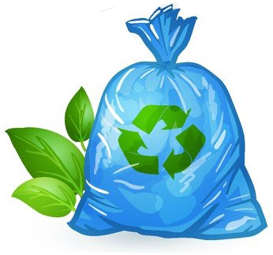
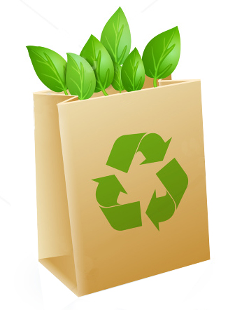
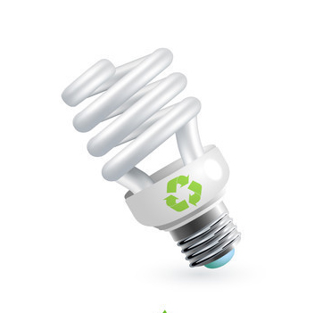
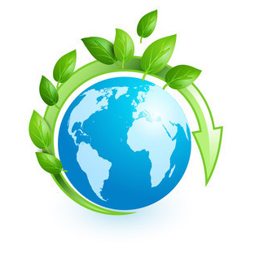

|
МУСОР
Завести матерчатую продуктовую сумку и всегда носить её с собой, чтобы не покупать бесконечное количество полиэтиленовых пакетов.
Отказаться от использования мешков для мусора и использовать для этого уже появившиеся в доме пакеты из-под продуктов.
Не выбрасывать на помойку батарейки, аккумуляторы и прочие опасные отходы: постараться найти места их приёма для переработки.

|
БУМАГА
Сдавать макулатуру в приёмные пункты.
Если мы не читаем рекламной продукции и бесплатных газет, можно наклеить на свой почтовый ящик объявление «Пожалуйста, никакой рекламы и бесплатных газет. Спасибо!»
Использовать оборотные стороны уже использованной бумаги, где это возможно. На них можно делать записи, распечатывать материалы, а ещё наши дети могут на них рисовать и «калякать-малякать».

|
|
ВОДА
Принимая душ вместо ванной, мы расходуем в среднем в три раза меньше воды.
Мы можем выключать воду на время чистки зубов или бритья.
Починить текущие краны и сливное устройство унитаза.
Установить водосберегающие насадки на краны (сеточки, разбивающие поток).
|
ЭНЕРГИЯ
Выключать лампочки, выходя из комнаты.
Выключать не работающие электроприборы из розетки, не оставляя проигрыватели и телевизоры в «спящем» режиме.
Утеплять окна зимой, закрывать двери в парадной, двери на чердак и лестницу – для экономии тепла в доме.
Обращать внимание на показатели потребления энергии при покупке электроприборов и выбирать наиболее экономичные.

|
Результатом наших действий станет:
Всего 5-6 полиэтиленовых пакетов в неделю, не отправленных в мусорный бачок, означают 55 неистраченных литров нефти в год, что к тому же на 150 кг в год сокращает выбросы углекислого и других газов, создающих парниковый эффект и меняющих климат на планете.
Сдавая макулатуру, мы спасаем деревья от вырубки
За год каждый мы можем сэкономить целое озеро диаметром 200 м и глубиной 2 м.
Экономия своих и природных ресурсов, уменьшение загрязнения окружающей среды.
Благодаря нашим стараниям, мы уменьшим вред, который человек наносит природе, и сохраним её в целостности и сохранности.
